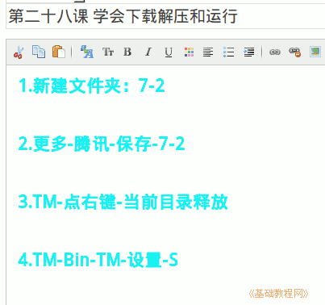

2011-2012 第一学期七年级电脑操作基础教学课程设计
作者：TeliuTe 来源：基础教程网
二十八、学会下载解压和运行 返回目录 下一课
学习目标：学会从网上下载文件；
注意事项：保存到自己的文件夹中；
1、学会下载解压和运行
1）新建文件夹：7-2；
2）在校园网中找到要下载的文件，保存到自己文件夹；
3）打开自己的文件夹，找到 TM-点右键-当前目录释放；
4）依次打开：TM-Bin-TM-设置-S；

板书设计：第28课 学会下载解压和运行
1.新建文件夹：7-2
2.更多-腾讯-保存-7-2
3.TM-点右键-当前目录释放
4.TM-Bin-TM-设置-S
课后记 2011-12-22 18:33：
修改密码，还想再问问
下午七年级的课，学习下载文件
--
讲解的方法有些问题，学生的注意力不能集中
又不想发火骂学生，讲的时候一贯不注意听
--
用TM作为例子，webqq太慢还容易出错
找了个绿色版的可以在win2k下直接运行
--
要不试试分解成几步，分成几部分操作
提前把准备的比如开开代理，安装一遍TM
--
建文件夹有困难，机子慢点了会卡
培养学生的耐心了，步骤好多
--
有些没练的也没怎么要求，以后会碰到的
到时候自然会用心学，现在不必刻意强求
--
不太听的原因是不知道有什么用，
先示范一下提起兴趣，然后就可以认真理解了
--
先写日志再操作，有的就忘了，不过也可以动脑筋
下节课肯定都会忘记的，不过可以相互指导讲解
--
先把文件夹建好，这个居然一直没碰到过
这学期用不上文件夹的知识，所以没操作
--
一直是以日志和空间网络为主，其他的弱化了
干扰的内容尽量都没操作，作为一个其他的项目
--
内容有些多，或者是精力不够，期末学习太紧
除非把建文件夹省略，直接存到我的文档，容易产生后续问题
--
日志简单些再，有更多时间进行操作练习
要对照练习，要求输入的时候仔细理解
--
多练习转弯，慢慢培养吧
总的来看操作还可以，这么复杂的都可以完成
--
机子卡的，火狐点完就没反应，过一会对才能显示
据说新机子只有50台了，从150变成50雁过拔毛
--
先建文件夹然后演示上一个班的内容，不对着黑板讲了
稍微好一些，打日志指法以顿了一下
本节学习了下载解压和运行的基础知识，如果你成功地完成了练习，请继续学习；
返回目录 下一课
本教程由86团学校TeliuTe制作|著作权所有
基础教程网：http://teliute.org/
美丽的校园……
转载和引用本站内容，请保留版权信息和本站链接。